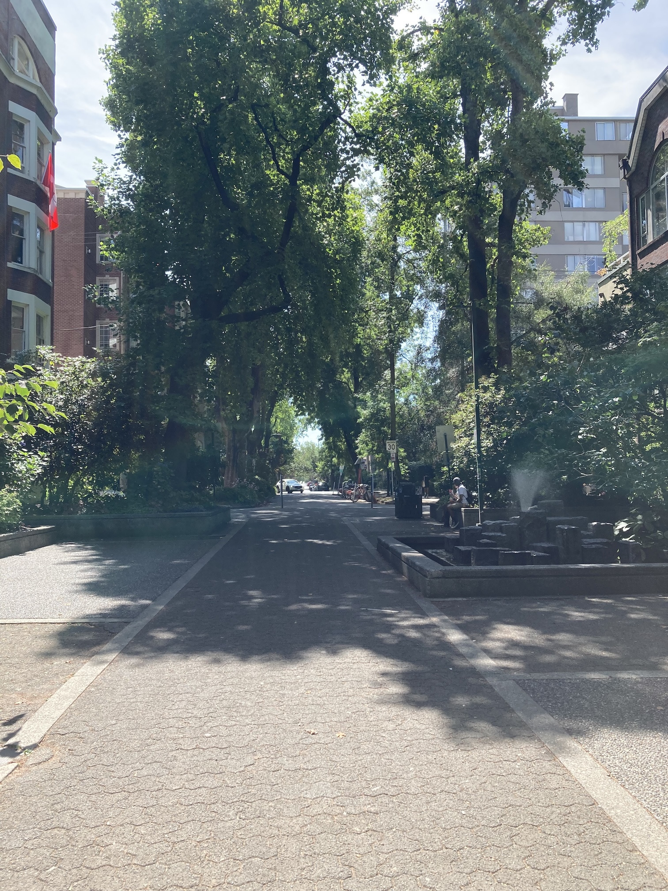
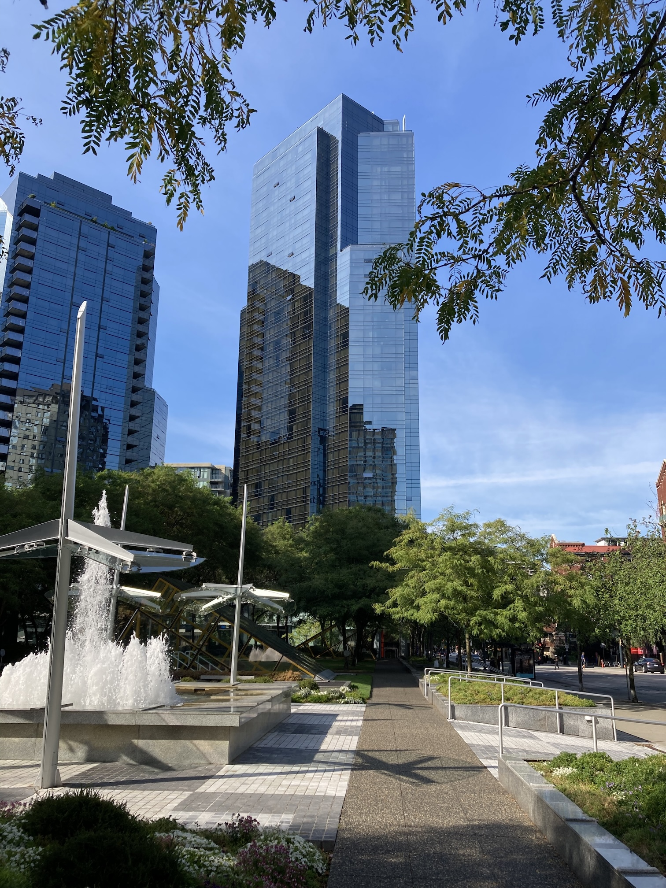
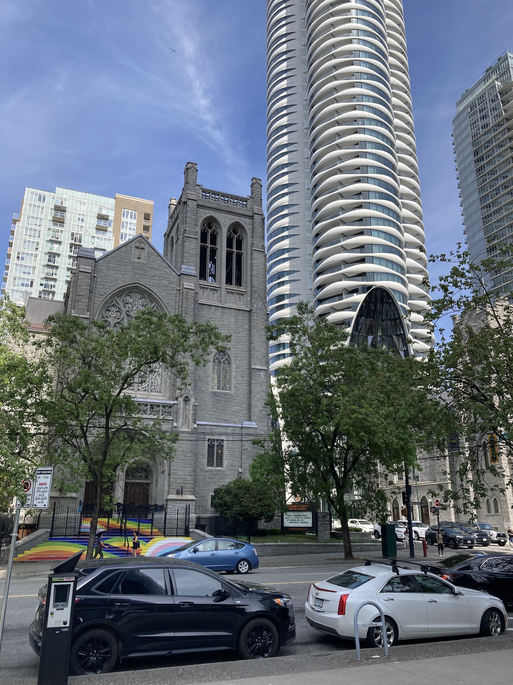
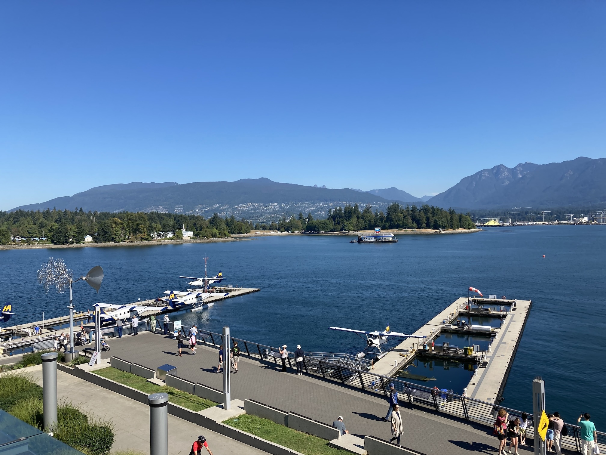
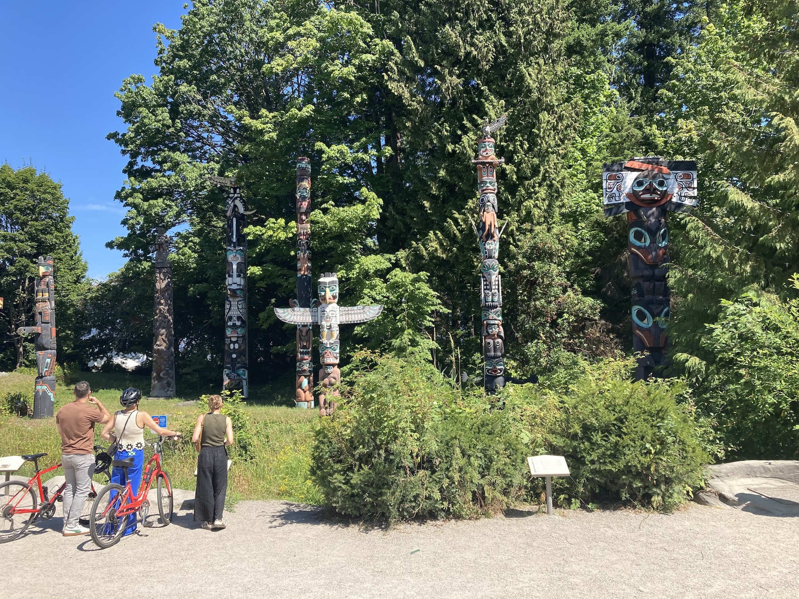
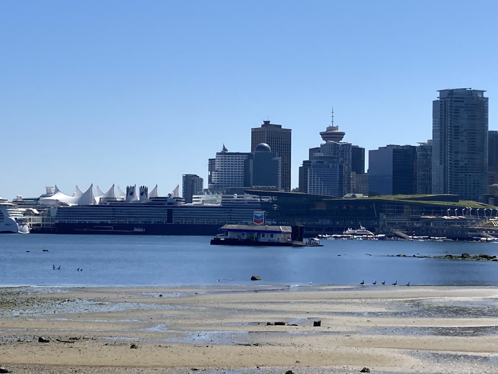
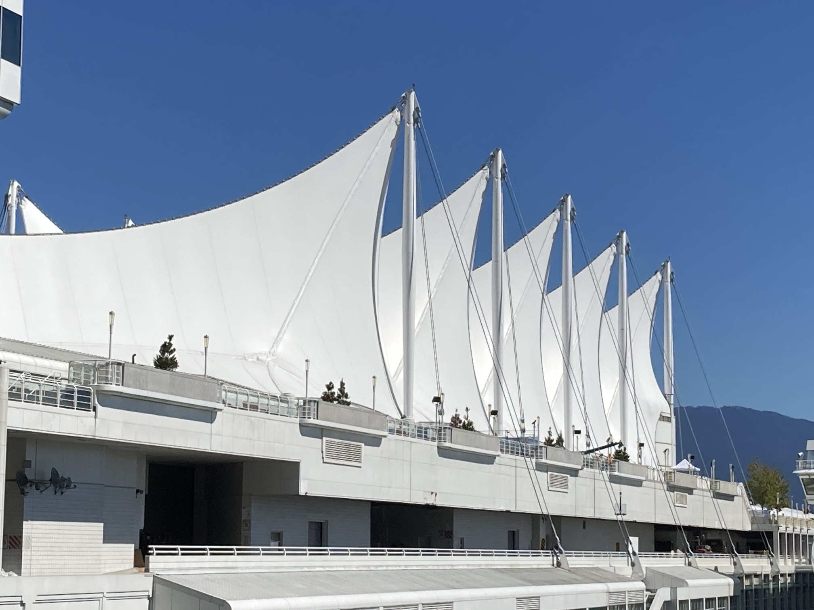

Saturday 9th August was our first of two days in Vancouver. I had a good night's sleep, but Angela was not feeling well. So I started by going to a nearby pharmacy to get her some imodium equivalent. She went back to bed and I went for breakfast in the hotel restaurant, which is in the other (North) tower. We were in the South Tower, which was the shorter of the two. The photo is of the 2010 Winter Olympics torch and is down by the harbour.
Angela spent most of the day sleeping, although we did go for a couple of gentle walks. The major event was an email from the Post Office about our 'locked' money card. So we went to a bank and reset Angela's card. I then went to a local cafe for some lunch.
On one walk (after the bank) we found the SkyTrain station that we will use on Monday to get to the airport. The other walk was to a nearby park, where there was a farmer's market. We also walked around some of the back-streets. Just a block away from the skyscrapers there are tree-lined streets with low-rise apartment blocks and individual houses. After that we went into a supermarket and I bought a sandwich, a muffin and a nectarine for my dinner.
When we got back to the hotel I went for a swim. Angela didn't eat anything all day, but was improving. We tried watching some TV, but they were mostly advertisements.
The first photo shows the two towers of our hotel and the second is an interesting mixture of old and new.
Sunday was another sunny day and Angela was feeling better. She had a bowl of yogurt, some toast and a cup of tea for breakfast. I had orange juice and oatmeal (with banana, strawberries, blueberries, nuts and maple syrup), plus some of Angela's toast. Although she didn't eat anything else until dinner.
After breakfast we spoke with Paul, plus a wave from Krista and Rowan. Then we went for a walk.
We went further than I had expected. Firstly we went down to the harbour and stopped for a coffee. Then we walked along the seafront, all the way to the totem poles in Stanley Park, before turning around and returning to the hotel. In total we walked a little under ten kilometres! Although slowly.
This is a view across the seaplane docks to Stanly Park. There was a brisk trade in flying tours, around Toronto and a little further afield. Planes were taking off and landing every few minutes. The wind vane that you can see on below was interesting and driven entirely by the wind.
We walked around the coastal path util we got to this collection of totem poles. They are all quite modern, but are in the styles of various indigenous people.
The skyline of Vancouver is not very distinctive, but this photo was taken from the coastal path in Stanley Park. On the left you can just about make out the 'sail' roof of the Canada Place, which was opened in 1986 as the Canada Pavilion for Expo 86. It now serves as the primary cruise ship terminal for the region, home to the Vancouver Convention Centre East Building, the Pan Pacific Vancouver Hotel, and the Vancouver World Trade Centre.
 When we got back I went for a swim, although the pool was more crowded than yesterday. Then we went for dinner in the hotel restaurant. It was not very busy. We paid by cash, since we need to try to use up all our 'paper' Canadian dollars.
Monday 11th August was our last day in Vancouver. We had to check out of the hotel by 11am, although we could leave our bags with the concierge. So after breakfast we packed and checked out. Angela wanted to buy a postcard to send to Claudia, but we couldn't find anywhere that sold them until we got down to the harbour.
We picked up our bags, walked to the station and took the SkyTrain (which is mostly underground) to the airport. Since we were too early to check in we decided to have a chicken burger. This was a mistake since I'd forgotten that we had pre-ordered a meal (three courses) on the flight! We didn't eat it.
So we had a sleepless overnight flight to Reykjavík. We then had about an hour before the flight to Gatwick. On the first flight we were in row 23 (of 28) and on the second flight we were in row 28! By the time that we got to the railway station at Gatwick (now about four o'clock on Tuesday) we only had ten minutes to wait for a train to Shoreham. By this time Angela was feeling alright, although tired, but I wasn't feeling too well. I had picked up a cold which turned out to be very heavy.
There were no taxis at Shoreham station, so we walked to the High Street. The posted timetable for the number 2 bus was completely wrong so we ended up waiting for about an hour before the Steyning bus arrived. So it was a little before six o'clock before we got home (exhausted).
| Return to Canada &: USA | © David James 2025 Last updated: 5th September 2025 |